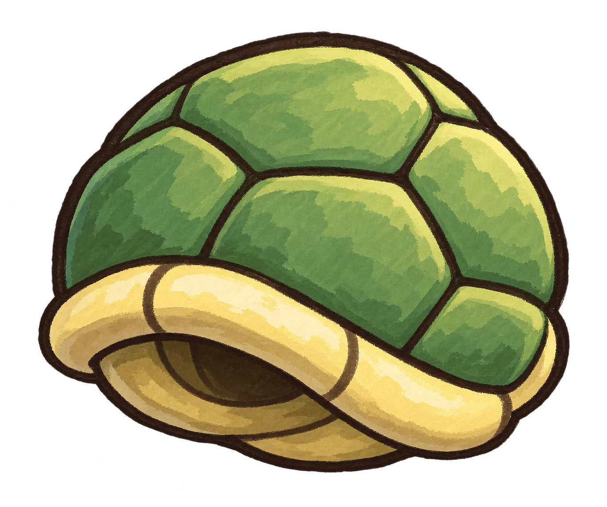
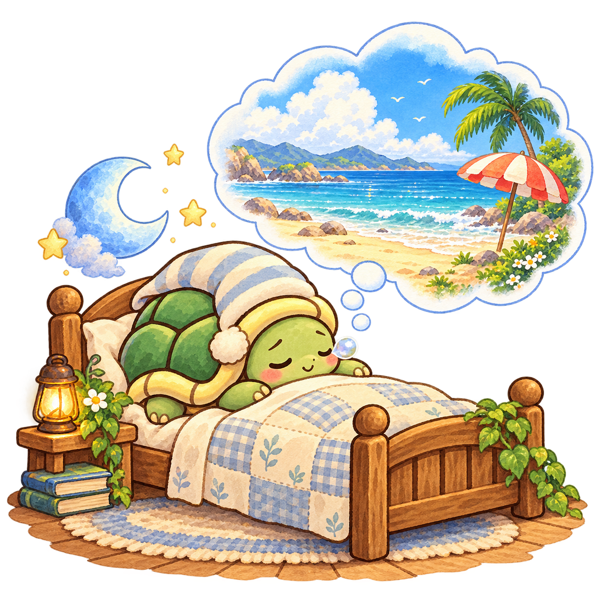
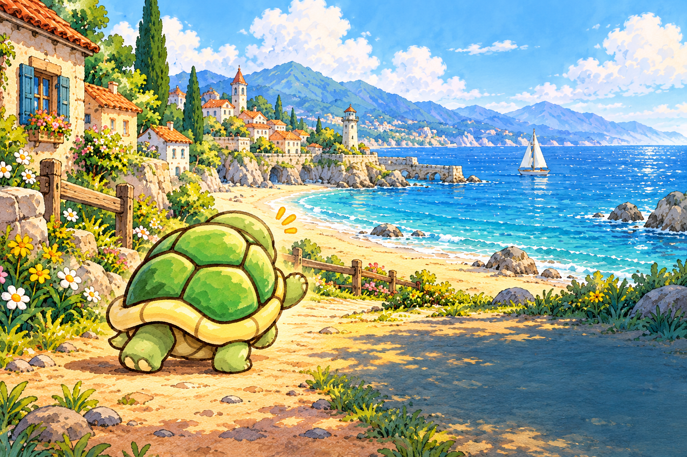
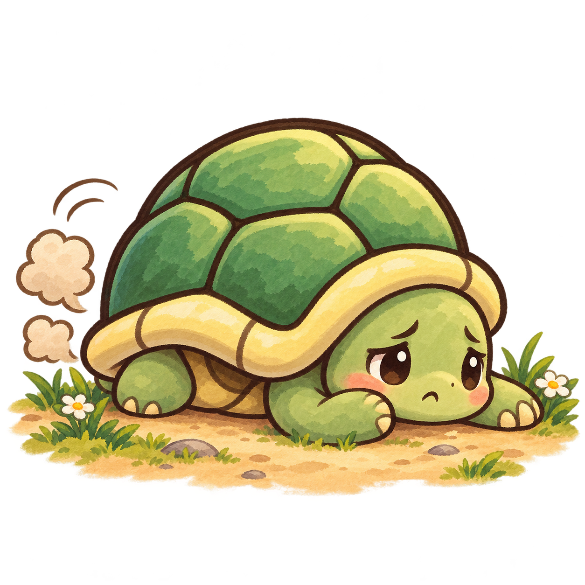

1

바다로 가자
작은 등껍질의 큰 여행
Let's Go to the Beach!!

작은 등껍질의 큰 여행
바다로
가자
꿈꾸던 그 바다를 향해!

Let's Goto the Beach!
거리0m
♕최고0m
◎0
햇살 마을다음: 도로 250 m
장치 0동물 0연결 0높이 0 m
바다까지 12,000 m
각도를 맞추고, 여행을 시작해요!
속력0m/s
공중 도움 3회
햇살 마을 · 0 m매번 같은 위치와 움직임에서 시작하는 고정 맵
잠깐 쉬어가기
거북이도 쉬는 중
준비되면 여행을 이어가요.

오늘의 작은 여행
참 멀리 왔어요!
0m
장치 도움 0번동물 도움 0번여행 보상 +0
지도에서 다음에 만날 장치를 확인하고 다시 도전하세요.
거북이의 여행 안내서
통통, 더 멀리!
- 각도 — 움직이는 바늘을 원하는 위치에서 멈춰요.
- 힘 — 게이지가 높을 때 멈추면 강하게 날아요.
- 콤보 — 3초 동안 빠르게 탭해서 추진력을 모아요.
- 장치 — 접촉하면 자동으로 재발사되거나 활공해요.
- 공중 도움 — 궤도를 살짝 바꾸거나 발사대에서 빨리 출발해요.
일반 바닥에서는 금방 느려져요. 장치와 새를 연결해 멀리 가세요.
모든 동물은 부딪히면 종마다 다른 도움을 줘요. 한 비행에서 각 동물은 한 번씩 도와줘요. 별 표시 동물은 더 크게 도와줘요. 장치 5개 연속 연결 시 공중 도움 1회를 회복해요.
지도에서 12,000 m 여행길과 다음 장치를 확인하세요.
등껍질은 10레벨까지 강화할 수 있어요. 공방의 부스터는 다음 발사에 한 번 자동 사용돼요.
♪는 배경음악, 🔊는 효과음을 따로 켜고 꺼요.
PC는 Space, 모바일은 버튼을 탭하세요.
작은 여행을 준비하는 중…
2
힘
—게이지가 높을 때 멈춰요
3
콤보
×03초 동안 빠르게 탭!
힘을 정하면 시작해요
다음 여행을 위한 준비
거북이의 작은 공방
여행에서 모은 코인으로 한 걸음 더.
최고 기록과 강화는 이 브라우저에 저장돼요.